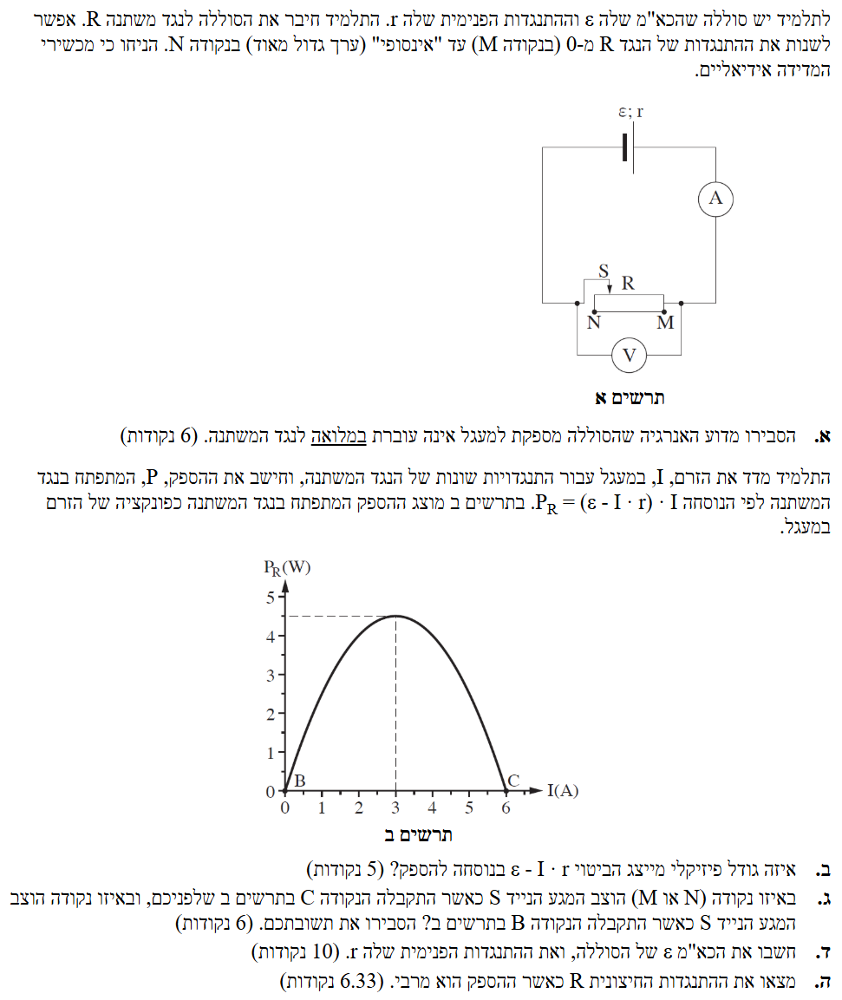
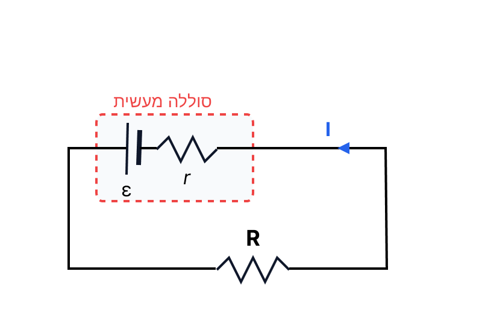

פתרון בגרות בפיזיקה
חשמל 2012, שאלה 3
עודכן:
--- --:--:--
מבט כללי על השאלה
שלום תלמידים! בפתרון זה ננתח מעגל חשמלי הכולל מקור מתח עם התנגדות פנימית ונגד משתנה (ראוסטט), ונלמד כיצד לעבוד עם גרף הספק כפונקציה של הזרם. בהצלחה!

[תמונת השאלה המקורית]
לא נמצאה תמונה בשם question-image.png באותה תיקייה.
מה נתון: מקור מתח (סוללה) בעל כוח אלקטרו-מניע (כא"מ) שנסמנו ב- \(\varepsilon\), והתנגדות פנימית המסומנת ב- \(r\). הסוללה מחוברת למעגל בו יש נגד משתנה \(R\).
מה מחפשים: עלינו להסביר מבחינה פיזיקלית מדוע האנרגיה שמסופקת על ידי הסוללה אינה עוברת במלואה (100%) לנגד המשתנה (המעגל החיצוני).
נוסחאות ועקרונות בשימוש:
\( P = V I \) (הספק חשמלי)
\( V = R I \) (חוק אוהם)
חוק שימור האנרגיה במעגל החשמלי
פתרון מילולי:
ראשית נפתח את נוסחת ההספק על נגד מתוך דף הנוסחאות: נציב את חוק אוהם \( V = R I \) לתוך נוסחת ההספק \( P = V I \) ונקבל ביטוי חדש להספק התלוי בזרם והתנגדות בלבד:
\[ P = (R \cdot I) \cdot I = I^2 R \]
כל סוללה מציאותית (שאינה אידיאלית) מורכבת משני חלקים: מקור מתח אידיאלי המייצר את הכא"מ, והתנגדות פנימית \(r\) של החומרים מהם עשויה הסוללה. כאשר סוגרים מעגל וזורם בו זרם חשמלי \(I\), הזרם עובר לא רק דרך הנגד החיצוני \(R\), אלא גם דרך ההתנגדות הפנימית \(r\) שבתוך הסוללה.
כתוצאה מכך, חלק מהאנרגיה החשמלית מומר לאנרגיית חום בתוך הסוללה עצמה (לפי ההספק \(P_r = I^2 r\)). לכן, רק שאר האנרגיה נמסרת לנגד המשתנה במעגל החיצוני.
מסקנה: האנרגיה אינה עוברת במלואה לנגד משום שחלק ממנה מתבזבז כחום על ההתנגדות הפנימית של הסוללה בעת זרימת הזרם.
תרשים להמחשת ההתנגדות הפנימית מתוך המקור:

טיפ מורה: תמיד דמיינו סוללה מציאותית כאילו הייתה מורכבת מסוללה אידיאלית (המספקת את ה- \(\varepsilon\)) המחוברת בטור לנגד קטן (ההתנגדות הפנימית \(r\)). כשעובר זרם \(I\), יש "נפילת מתח" פנימית של \(I \cdot r\).
מה נתון: התלמיד חישב את ההספק \(P_R\) על הנגד המשתנה בעזרת הנוסחה \(P_R = (\varepsilon - I \cdot r) \cdot I\).
מה מחפשים: איזה גודל פיזיקלי מייצג הביטוי \( \varepsilon - I \cdot r \) המופיע בתוך הסוגריים בנוסחה זו?
נוסחאות בשימוש:
\( V_{ab} = \varepsilon - I r \) (מתח הדקים)
\( P = V I \) (הספק חשמלי)
פתרון:
אם נשווה את הנוסחה שניתנה בשאלה \( P_R = (\varepsilon - I \cdot r) \cdot I \) לנוסחת ההספק הכללית \( P = V \cdot I \), נראה מיד שהביטוי בסוגריים מתפקד כמתח על הנגד המשתנה.
מבחינה פיזיקלית, הביטוי \( \varepsilon - I \cdot r \) הוא בדיוק הנוסחה של מתח ההדקים של מקור המתח. זהו המתח הנמדד בין קצוות הסוללה כאשר זורם זרם במעגל. כיוון שהסוללה מחוברת במקביל למעגל החיצוני (הנגד \(R\)), מתח ההדקים שווה בדיוק למתח על הנגד המשתנה.
הביטוי \( \varepsilon - I \cdot r \) מייצג את מתח ההדקים של הסוללה (שהוא גם המתח הנופל על הנגד המשתנה).
טיפ מורה: שימו לב שמד המתח (וולטמטר) המחובר במעגל בתרשים א' מודד בדיוק את הגודל הזה! הוא מחובר במקביל לנגד החיצוני, אך ניתן לראות כי אלו בדיוק אותן נקודות חיבור כמו אלו של הדקי הסוללה.
מה נתון: גרף של ההספק על הנגד כפונקציה של הזרם \(P_R(I)\).
הנקודה C מתאימה לזרם מקסימלי \(I=6A\) והספק \(P_R=0W\).
הנקודה B מתאימה לזרם אפס \(I=0A\) והספק \(P_R=0W\).
הגררה \(S\) יכולה לנוע מנקודה M (התנגדות 0) לנקודה N (התנגדות אינסופית).
מה מחפשים: לקבוע היכן הוצבה הגררה (M או N) בכל אחת מהנקודות בגרף (C ו-B) ולהסביר.
נוסחאות:
\( I = \frac{\varepsilon}{R+r} \)
\( P = V I \)
\( V = R I \)
ניתוח נקודה C:
בנקודה C הזרם במעגל הוא מקסימלי. לפי חוק אוהם למעגל שלם, הזרם המקסימלי מתקבל כאשר ההתנגדות הכוללת במעגל היא מינימלית, כלומר כאשר ההתנגדות החיצונית היא \( R = 0 \) (מצב של "קצר"). בנוסף, כפי שפיתחנו בסעיף א', ההספק על הנגד הוא \(P_R = I^2 R\). ניתן לראות שההספק בנקודה זו הוא 0 למרות שהזרם שונה מאפס, וזה ייתכן רק אם \( R = 0 \). התנגדות אפס מתקבלת כאשר הגררה בנקודה M.
ניתוח נקודה B:
בנקודה B הזרם במעגל הוא אפס (\( I = 0 \)). הזרם במעגל מתאפס כאשר ההתנגדות של המעגל החיצוני שואפת לאינסוף (\( R \rightarrow \infty \)), מצב הנקרא "נתק". על פי הנתון, התלמיד שינה את התנגדות הנגד עד לערך "אינסוף" בנקודה N.
הנקודה C מתקבלת כאשר הגררה בנקודה M (קצר).
הנקודה B מתקבלת כאשר הגררה בנקודה N (נתק).
טיפ מורה: זהו יישום קלאסי של מצבי קצה בחשמל. חשוב לדעת ש-"קצר" שקול להתנגדות 0 (הזרם מקסימלי והמתח על הקצר הוא 0) ו-"נתק" שקול להתנגדות אינסופית (הזרם הוא 0 והמתח עליו שווה לכא"מ).
מה נתון:
נקודת חיתוך (C): \(I_1 = 6A\), \(P_{R1} = 0W\).
נקודת מקסימום: \(I_2 = 3A\), \(P_{R2} = 4.5W\).
המשוואה השולטת (מתוך נוסחת הפתיח בסעיף ב'): \( P_R = \varepsilon \cdot I - I^2 \cdot r \).
מה מחפשים: לחשב את הכא"מ של הסוללה (\( \varepsilon \)) ואת ההתנגדות הפנימית שלה (\( r \)).
נוסחאות:
\( P = V I \)
פתרון צעד-אחר-צעד:
שלב 1: משוואה מנקודה C
נציב את נתוני נקודה C במשוואת ההספק הנתונה בשאלה:
\[ \begin{aligned}
0 &= \varepsilon (6) - r (6^2) \\
0 &= 6\varepsilon - 36r \\
6\varepsilon &= 36r \implies \varepsilon = 6r
\end{aligned} \]
שלב 2: משוואה מנקודת המקסימום
נציב את נתוני נקודת המקסימום:
\[ \begin{aligned}
4.5 &= \varepsilon (3) - r (3^2) \\
4.5 &= 3\varepsilon - 9r
\end{aligned} \]
שלב 3: פתרון מערכת המשוואות
נציב את הביטוי שמצאנו עבור \( \varepsilon \) מהמשוואה הראשונה לתוך המשוואה השנייה:
\[ \begin{aligned}
4.5 &= 3(6r) - 9r \\
4.5 &= 18r - 9r \\
4.5 &= 9r \implies r = 0.5 \ \Omega
\end{aligned} \]
כעת נציב חזרה את הערך של \(r\) כדי למצוא את הכא"מ:
\[ \varepsilon = 6 \cdot 0.5 = 3 \ V \]
ההתנגדות הפנימית היא \( r = 0.5 \ \Omega \) והכא"מ של הסוללה הוא \( \varepsilon = 3 \ V \).
טיפ מורה: דרך נוספת ואלגנטית להבין את נקודה C היא בעזרת הזרם בקצר. כשההתנגדות החיצונית מתאפסת, הזרם מוגבל רק על ידי ההתנגדות הפנימית: \( I_{max} = \frac{\varepsilon}{r} \). מהגרף \( I_{max} = 6A \), ולכן ישר מקבלים \( \frac{\varepsilon}{r} = 6 \).
מה נתון: מצב של הספק מקסימלי מתרחש כאשר \(I = 3A\) וההספק הוא \(P_R = 4.5W\). נתוני הסוללה: \(\varepsilon = 3V, \ r = 0.5\Omega\).
מה מחפשים: את גודלה של ההתנגדות החיצונית \( R \) במצב בו ההספק המופק עליה הוא המרבי.
נוסחאות:
\( P = V I \)
\( V = R I \)
\( I = \frac{\varepsilon}{R+r} \)
דרך א' - בעזרת נוסחת ההספק:
נתון שההספק הוא \( 4.5W \) והזרם הוא \( 3A \). בעזרת הנוסחאות מתקבל הקשר שפיתחנו קודם \( P = I \cdot (I \cdot R) = I^2 R \). נציב ערכים לחילוץ \( R \):
\[ \begin{aligned}
4.5 &= (3^2) \cdot R \\
4.5 &= 9 \cdot R \implies R = 0.5 \ \Omega
\end{aligned} \]
דרך ב' - בעזרת חוק אוהם:
אנו יודעים שהזרם במצב זה הוא \( 3A \). נציב את נתוני הסוללה שמצאנו בחוק אוהם למעגל השלם:
\[ \begin{aligned}
3 &= \frac{3}{R + 0.5} \\
3 \cdot (R + 0.5) &= 3 \\
R + 0.5 &= 1 \implies R = 0.5 \ \Omega
\end{aligned} \]
ההתנגדות החיצונית \( R \) כאשר ההספק הוא מרבי שווה ל- \( 0.5 \ \Omega \).
טיפ מורה: שימו לב לתוצאה היפהפייה! מצאנו ש- \( R = 0.5 \Omega \), וזה בדיוק שווה להתנגדות הפנימית \( r = 0.5 \Omega \). זה אינו מקרה. קיים משפט בפיזיקה הנקרא "משפט העברת הספק מקסימלי" הקובע כי מקור מתח ימסור את ההספק המרבי לנגד חיצוני, בדיוק כאשר ההתנגדות החיצונית שווה להתנגדות הפנימית של המקור (\( R = r \)). תוצאה זו מאמתת את החישוב שלנו!